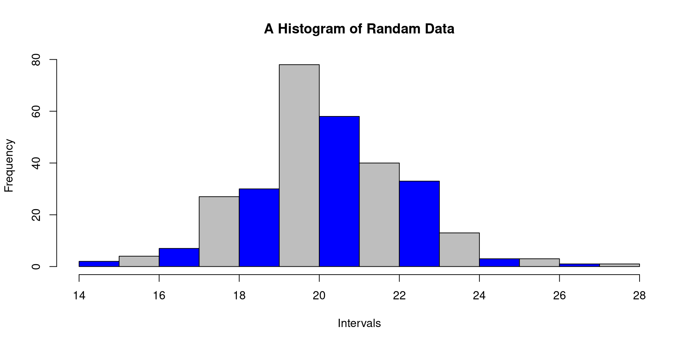
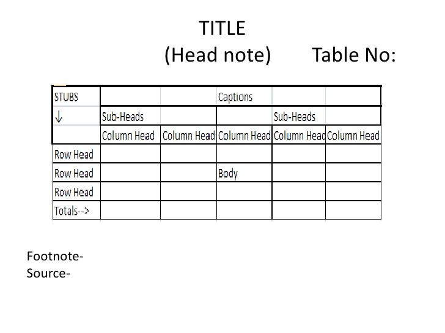
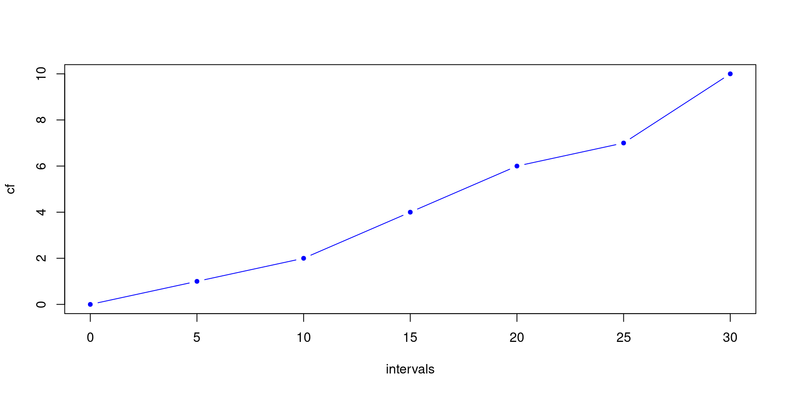
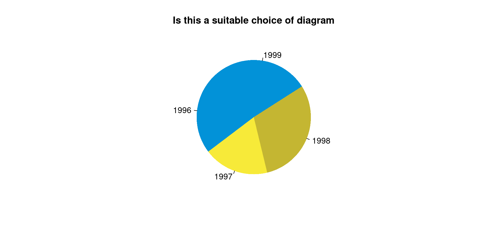
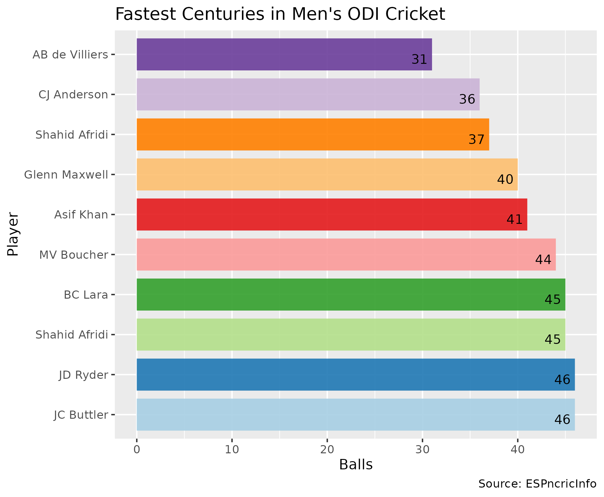
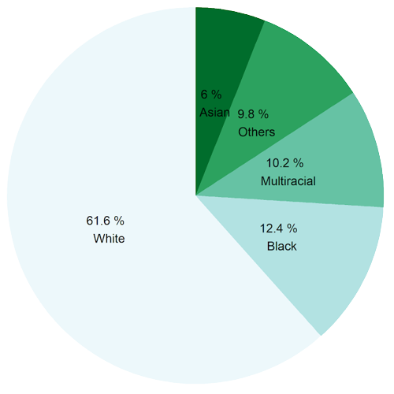
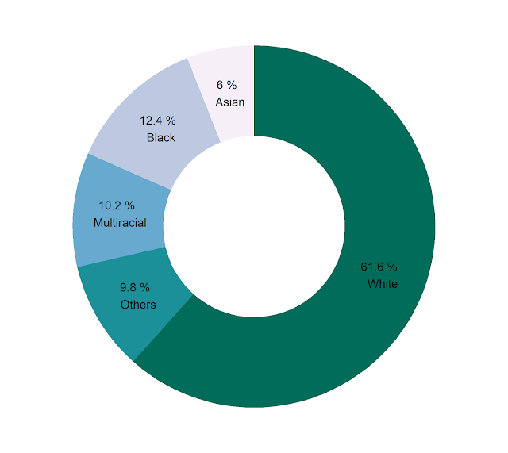
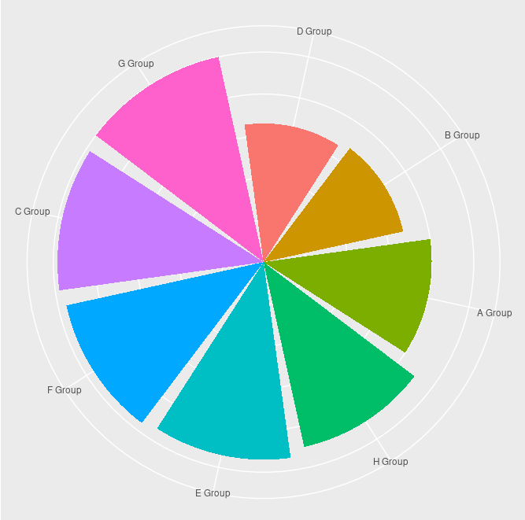

Statistics I: Collection, Organization & Presentation of Data
Abdullah Al Mahmud
Invalid Date
Data Collection
Types of Data
- Qualitative
- Quantitative
Sources of Data
Primary: Obtained directly (not collected from someone else)
- Secondary: Using pre-collected data from someone else/some organization
Example
- A researcher buys data from BMD to build a model of rainfall behavior
- A researcher runs an experiment to measure speed of light using a novel technique.
- A researcher makes use of the data generated by the one in example 2
Method of Data Collection
- Direct personal Inquiry
- Indirect oral inquiry
- Telephone etc.
Sources of Secondary Data
- Published: Journal, Newspaper etc.
- Unpublished: BBS, WHO, IMF, FAO, ICDDR,B
DIsadvantages of Secondary Data
- Purpose might be different
- Suitability
- Reliability
- Unit
Organizing Data
Tabluation

table
Data Classification
- Geographical
- Chronological
- Quantitative
- Qualitative
Example
Geographical
| Country | Bangladesh | USA |
|---|---|---|
| GDP(m) | 120 | 500 |
Chronological (Time series data)
| Year | 2015 | 2016 |
|---|---|---|
| GDP(m) | 120 | 500 |
Quantitative Classification
| Income level | 40,000-50,000 | 50,000-1,00,000 |
|---|---|---|
| Frequency | 120 | 34 |
Frequency Distribution
Three things required
- Range
- No. of classes (k) &
- Class Interval (CI)
Let k or CI & find the other
- \(CI = \frac{Range}{\text{Number of classes (k)}}\)
- \(\text{Number of classes, k}= \frac{Range}{\text{CI}}\)
- Sturges Method: \(k = 1 + 3.322 \space logN\); where N = no. of observations
Frequency Distribution Example
| No. of Surviving Plants | Frequency | Cumulative Frequency | Percentage | Cumulative Percentage |
|---|---|---|---|---|
| 20–29 | 3 | 3 | 3% | 3% |
| 30–39 | 14 | 17 | 14% | 17% |
| 40–49 | 12 | 29 | 12% | 29% |
| 50–59 | 8 | 37 | 8% | 37% |
| 60–69 | 18 | 55 | 18% | 55% |
| 70–79 | 10 | 65 | 10% | 65% |
| 80–89 | 23 | 88 | 23% | 88% |
| 90–99 | 12 | 100 | 12% | 100% |
| Total | 100 | 100% |
Key Insights
- In most schools (23), the number of surviving plants is between 80 to 89.
- Very few schools (3) have surviving plants in the 20–29 range.
- More than half of the schools (55%) have up to 69 surviving plants.
- A significant portion of schools (35%) report 70 or more surviving plants, with the 80–89 range alone accounting for 23%.
- The 50–59 range has relatively few schools (8%), creating a noticeable dip between the lower and higher survival groups.
Normal Distribution
| Height in cm) | 157 - 162 | 162 - 167 | 167 - 172 | 172 - 177 | 177 - 182 | 182 - 187 | 187 - 192 |
|---|---|---|---|---|---|---|---|
| Frequency (\(f_i\)) | 20 | 120 | 250 | 320 | 200 | 70 | 20 |
Graphs
Histogram
- Inclusive vs exclusive
What does it tell us
Histogram (contd.)
Can these intervals be readily used?
(5-10); (10-15); (15-20)
(5-9); (10-14); (15-20)
If not, what should we do?
Stem and Leaf
- key in stem and leaf plot
- How to interpret stem and leaf plot
The decimal point is 1 digit(s) to the right of the |
0 | 1
1 | 0246
2 | 0567
3 | 0How to interpret cf and rf
| Class | Frequency | Cumulative Frequency (cf) |
Relative Frequency (rf) |
Cumulative Relative Frequency (crf) |
|---|---|---|---|---|
| 30-35 | 4 | 4 | 0.09 | 0.09 |
| 35-40 | 10 | 14 | 0.23 | 0.32 |
| 40-45 | 20 | 34 | 0.45 | 0.77 |
| 45-50 | 8 | 42 | 0.18 | 0.95 |
| 50-55 | 2 | 44 | 0.04 | 1 |
| n=44 | n=44 |
What Ogives tell us

Bar vs Pie
- When to use which?
- How to calculate angles?
- Can we draw on 180 degrees?
Draw Suitable Chart
Favorite colors of 30 individuals are noted down.
Brown Red Pink Green Green Green Brown Pink Brown Red
Brown Red Green Pink White Red Brown Green White Brown
White Brown Pink Red White Brown Green Red Pink Red Choose Diagram
| year | Sales ($) |
|---|---|
| 1996 | 76 |
| 1997 | 58 |
| 1998 | 95 |
| 1999 | 85 |

| Category | Cost(Tk.) |
|---|---|
| House rent | 10,000 |
| Utility Bill | 3,000 |
| Telecom | 2000 |
Frequency Polygon vs Frequency Curve
- Curve: Smoothed corners
Bar Diagram vs Histogram
Example Charts
Bar Chart

Pie Chart

Donut Chart

Rose Plot


www.statmania.info | Abdullah Al Mahmud | Press space or arrow to change slides